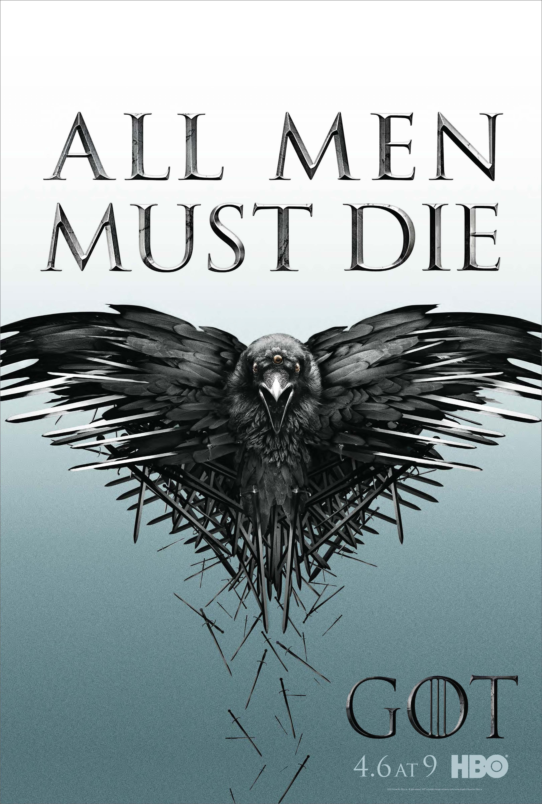

Game Of Thrones

Plot

The War of the Five Kings is drawing to a close, but new intrigues and plots are in motion, and the surviving
factions must contend with enemies not only outside their ranks, but within.
King in the North Robb Stark is dead, betrayed by his own bannermen the Boltons and Freys while he was a guest under the Freys' roof. Robb's mother Catelyn and his wife Talisa, along with most of the Northern leadership were also killed at the massacre now known as the Red Wedding, along with the entire Northern army.
Having already defeated Stannis Baratheon at the Battle of the Blackwater and secured southern Westeros, House Lannister stands triumphant. The crazed boy-king Joffrey Baratheon gloats, though the victory truly belongs to his grandfather, Lord Tywin Lannister, Hand of the King and the real power behind the Iron Throne. As reward for their betrayal, Tywin has granted the Boltons rule of the North, and the Freys with nominal rule of Riverrun, though the castle remains under the command of Brynden Tully.
Though the mainland of Westeros is mostly under Lannister control, there are still two factions defying them: the Greyjoys and the Baratheons. Ironborn occupiers remaining in the North are being hunted down by Ramsay Snow,
bastard son of Roose Bolton. Ramsay holds Theon Greyjoy hostage, horribly torturing him at whim, but Balon Greyjoy considers his son as good as dead.
Stannis Baratheon, as the rightful heir to his older brother King Robert, still refuses to surrender, despite having only the remnants of an army. However, following the advice of Melisandre, he has focused his attention of the threat of the wildlings marching against the Wall.
The Lannisters only managed to win on the battlefield with the key support of House Tyrell of the Reach, which they won through promising a marriage-alliance between King Joffrey and Margaery Tyrell, daughter of Lord Mace Tyrell. Queen Regent Cersei fears - correctly - that just as the Baratheons became dependent on the Lannisters after Robert's Rebellion, the Lannisters are starting to become dependent on the Tyrells, who are already insinuating themselves into positions of power at King's Landing. A royal wedding is to be held between Joffrey and Margaery, which will confirm the future of the realm.
The only two kingdoms which have remained entirely aloof from the war so far are the Vale of Arryn and Dorne. While Lysa Arryn chose to remain neutral, former Master of Coin and new Lord of Harrenhal Petyr Baelish has been sent by Lord Tywin to woo her with a marriage proposal, now that he's a high lord and a suitable match for the Lady Regent of the Vale. Nevertheless only Littlefinger knows what Littlefinger is plotting.
For their own part, House Martell of Dorne has loathed the Lannisters ever since the Sack of King's Landing, when Ser Gregor Clegane raped and killed Elia Martell - sister of Doran Martell, the ruling Prince of Dorne - and Lord Tywin did nothing to punish him. During the War of the Five Kings Tyrion Lannister prevented Dorne from declaring for any of House Lannister's enemies by sending Princess Myrcella to Sunspear as part of her betrothal to Prince Trystane Martell, and in return, the Martells were promised a seat on the Small Council. To the consternation of the Lannisters, a large Dornish embassy arrives in King's Landing to claim their due - but instead of the elderly Prince Doran, his brash younger brother Prince Oberyn comes to claim the council seat. Oberyn loves the ladies, he loves the boys, but most of all he loved his sister Elia, and the Lannisters aren't the only ones who pay their debts.
Meanwhile, across the Narrow Sea in Slaver's Bay, perhaps the greatest threat to Lannister rule is rapidly growing in strength. Daenerys Targaryen now commands not just three live dragons - who are starting to grow large enough to serve as decisive weapons of war - but also an army of eight thousand Unsullied warrior-eunuchs. For now, Queen Daenerys is carving a path through Slaver's Bay - not of conquest but of liberation. As functionally once a slave herself, Daenerys is determined to free the downtrodden slaves of the region. First Astapor and then Yunkai fell before Daenerys's forces, and hundreds of thousands of freed slaves now flock to her banner. Yet Daenerys must now face the last and greatest of the slaver-cities, Meereen - and unlike her previous victories, they have had time to prepare for her arrival.
Far to the north, beyond the politics and meaningless feuds of the south, the Wall and the dwindling Night's Watch are all that stand between the Seven Kingdoms and the horrors beyond. The White Walkers have emerged in force, leading their armies of wights. The wildlings have rallied behind King-Beyond-the-Wall Mance Rayder in an attempt to flee south, knowing that as the White Walkers advance, anyone who remain in the lands beyond the Wall will die and become part of the undead host. Mance's wildling army now numbers in the tens of thousands, and is determined to force its way through the Wall to reach the safety of the south. All that stands between the Seven Kingdoms and this barbarian invasion is the Night's Watch, whose numbers and leadership were recently devastated with the deaths of a third of their number and that of Lord Commander Jeor Mormont. Jon Snow and Samwell Tarly do what they can to prepare Castle Black for the massive wildling attack.
Not only are the Night's Watch outnumbered and their remaining leadership fractured, but advanced raiding bands of wildlings have infiltrated behind the Wall by climbing over it, preparing to attack the weakly defended southern side of Castle Black. These warbands are led by Tormund and the fearsome Styr, Magnar of Thenn - as well as Jon Snow's ex-lover Ygritte, whom he betrayed when he revealed his true loyalty and returned to the Night's Watch.
In the Seven Kingdoms, while House Stark stands on the verge of extinction - and is believed to be just that by the realm at large - four "lone wolves" fight to survive: Sansa Stark remains a hostage of the Iron Throne and a forced marriage to Tyrion Lannister, Rickon Stark seeks the safety of Last Hearth and the fiercely loyal House Umber, Bran Stark and his companions Hodor, Jojen and Meera Reed have crossed the Wall chasing a vision, and Arya Stark, having lost everything and forced to rely on the protection of a man she hates, clings to survival and her thirst for vengeance.
| No. | Title | Air Date |
|---|---|---|
| 1 | "Two Swords" | April 6, 2014 |
| 2 | "The Lion and the Rose" | April 13, 2014 |
| 3 | "Breaker of Chains" | April 20, 2014 |
| 4 | "Oathkeeper" | April 27, 2014 |
| 5 | "First of His Name" | May 4, 2014 |
| 6 | "The Laws of Gods and Men" | May 11, 2014 |
| 7 | "Mockingbird" | May 18, 2014 |
| 8 | "The Mountain and the Viper" | June 1, 2014 |
| 9 | "The Watchers on the Wall" | June 8, 2014 |
| 10 | "The Children" | June 15, 2014 |
Main cast
| Actor | Character | No. of Episodes | Status |
|---|---|---|---|
| Peter Dinklage | Tyrion Lannister | 8 episodes | Alive |
| Nikolaj Coster-Waldau | Jaime Lannister | 9 episodes | Alive |
| Lena Headey | Cersei Lannister | 9 episodes | Alive |
| Emilia Clarke | Daenerys Targaryan | 8 episodes | Alive |
| Kit Harrington | Jon Snow | 8 episodes | Alive |
| Aidan Gillen | Petyr Baelish | 5 episodes | Alive |
| Charles Dance | Tywin Lannister | 7 episodes | Dead |
| Natalie Dormer | Margery Tyrell | 6 episodes | Alive |
| Liam Cunningham | Davos Seaworth | 4 episodes | Alive |
| Stephen Dillane | Stannis Baratheon | 4 episodes | Alive |
| Carice Van Houten | Melisandre | 3 episodes | Alive |
| Alfie Allen | Theon Greyjoy | 3 episodes | Alive |
| John Bradley | Samwell Tarly | 7 episodes | Alive |
| Jack Gleeson | Joffrey Baratheon | 3 episodes | Dead |
| Isaac Hempstead Wright | Bran Stark | 4 episodes | Alive |
| Rory McCann | Sandor "The Hound" Clegane | 6 episodes | Alive |
| Sophie Turner | Sansa Stark | 7 episodes | Alive |
| Maisie Williams | Arya Stark | 6 episodes | Alive |
| Gwendoline Christie | Brienne of Tarth | 7 episodes | Dead |
| Jerome Flynn | Bronn | 4 episodes | Alive |
| Conleth Hill | Varys | 6 episodes | Alive |
| Kristofer Hivju | Tormund Giantsbane | 5 episodes | Alive |
| Sibel Kekilli | Shae | 4 episodes | Dead |
| Rose Leslie | Ygritte | 5 episodes | Dead |
| Hannah Murray | Gilly | 3 episodes | Alive |
| Iwan Rheon | Ramsay Snow | 3 episodes | Alive |
| Iain Glen | Jorah Mormont | 7 episodes | Alive |